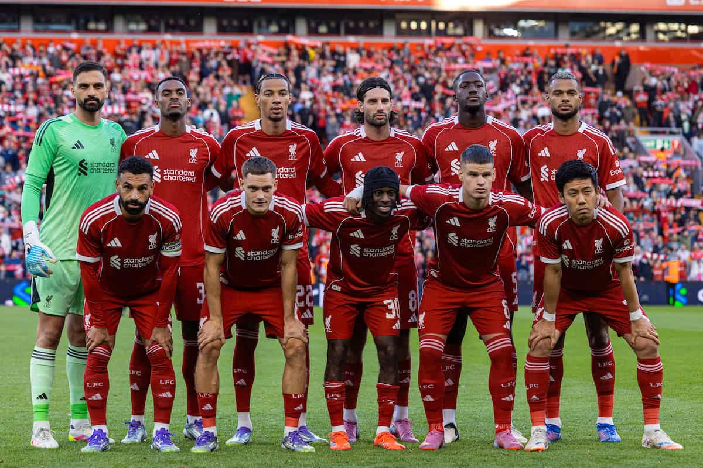
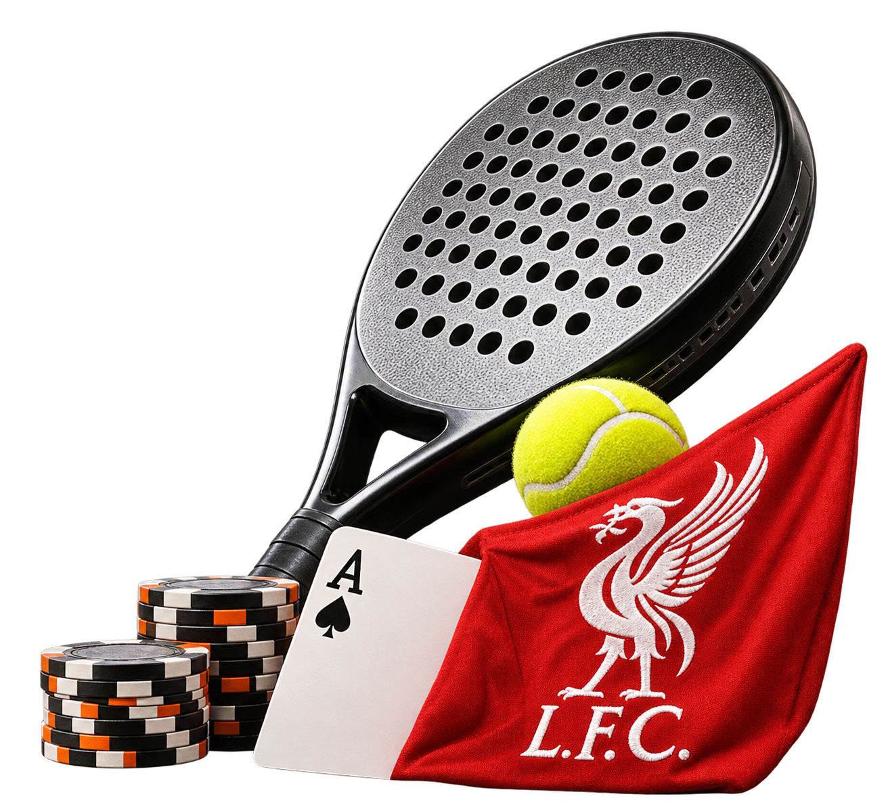
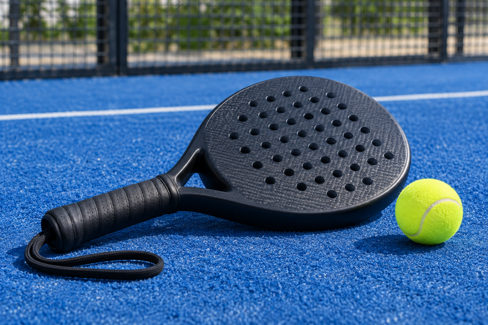

01 /
FOOTBALL &
LIVERPOOL FC
Football has been part of my life since childhood, and Liverpool FC is the club I support.
That interest also became a college project: my own Liverpool fan website.

YP
THE PERSONAL WEBSITE OF YEVHENII
03 / MY INTERESTS
LIFE BEYOND THE LAB.
Football and padel are two of my interests outside studying. I also made a Liverpool fan website for my Multimedia course.


01 /
Football has been part of my life since childhood, and Liverpool FC is the club I support.
That interest also became a college project: my own Liverpool fan website.

02 /
Padel is another sport I enjoy in my free time.
03 /
I made this Liverpool FC fan website for my Multimedia college course. The link below opens the site I published on Netlify.
VIEW MY LIVERPOOL PROJECT ↗Opens in a new tab.